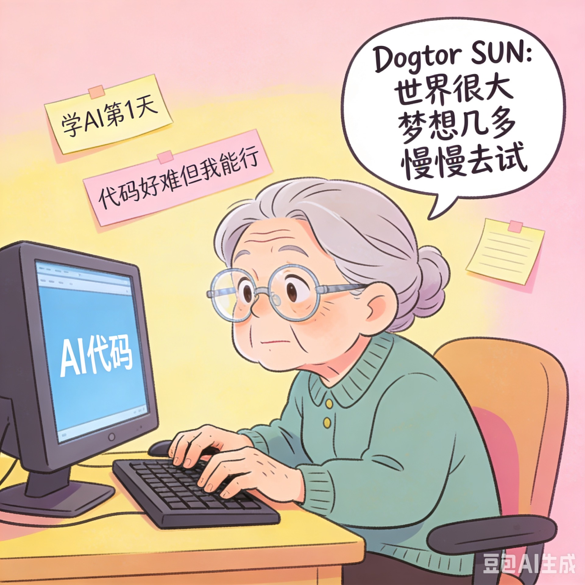
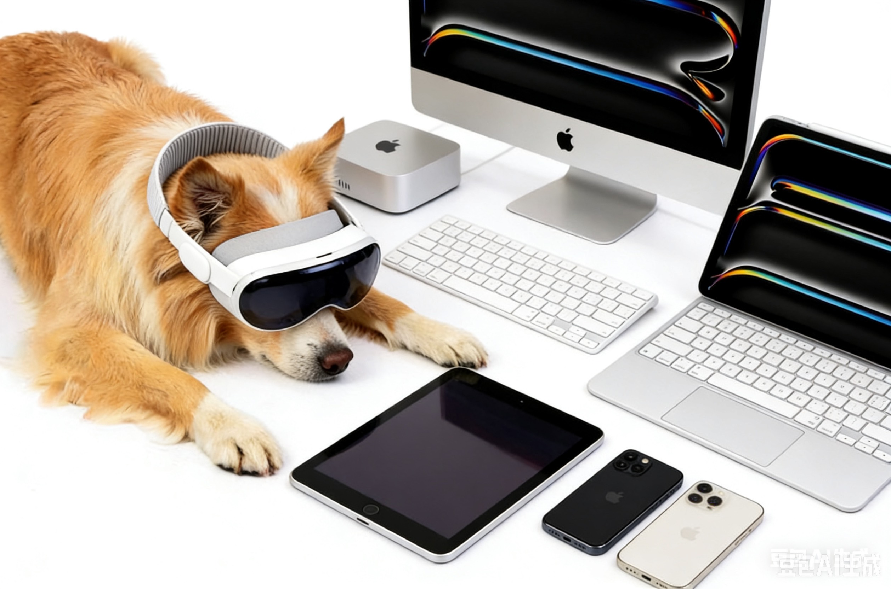
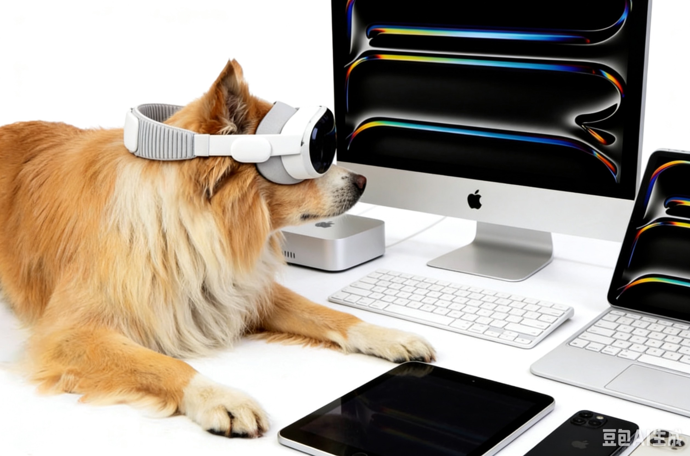
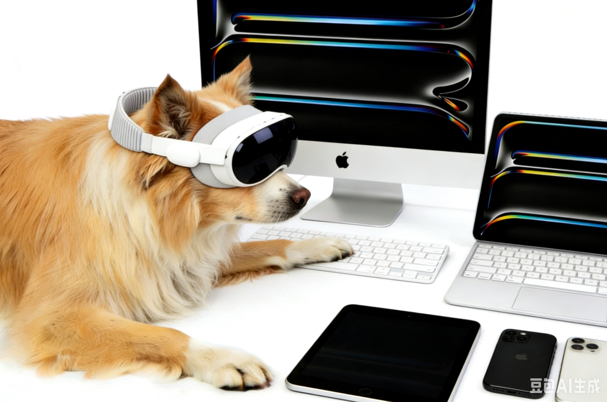
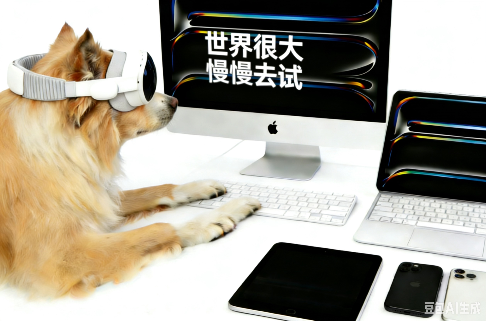
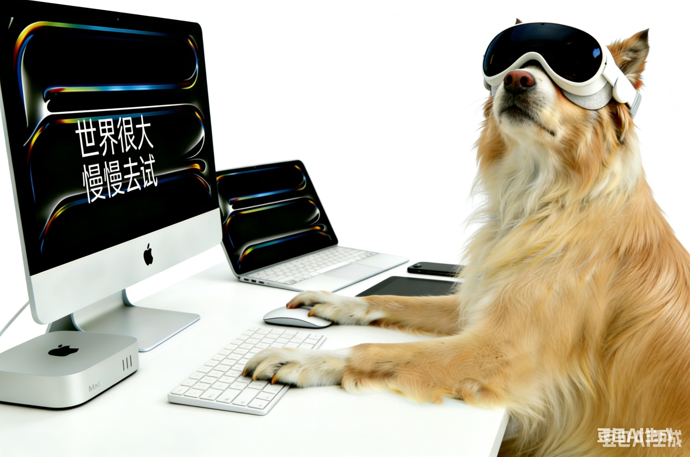
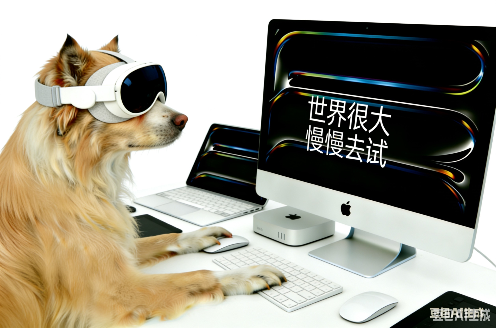
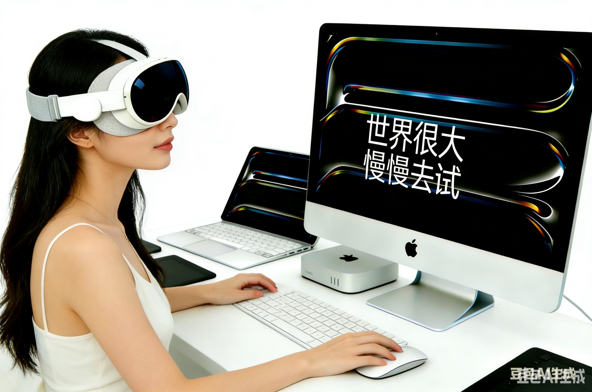
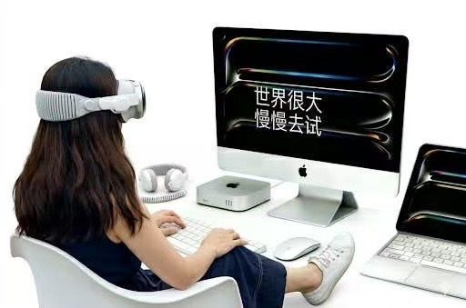

换头像的想法一出现，我就知道自己想换成什么样的，因为我电脑里有几张宠物图片，随便翻出了一张狗狗敲键盘的相片，就是它了。
可用了后发现不够反映我的真实状态，毕竟我也是要做AI产品的人了，一台笔记本电脑也太简陋了。我置备的东西可远远不止这些。我桌子上现在就有Apple的vision pro头显、Meta的Oculus Quest 2头显，两部苹果手机，两部iPad，一个mac book air，还有studio display，我甚至还订了mac mini，还在贾皮特的建议下购入了罗技键盘（我其实想买苹果键盘，但它只可以无线连两个设备，我这么大规模大阵势，两个怎能满足需要，于是退而求其次入了罗技键盘），鼠标本来也应该换罗技配套鼠标，这样鼠标也可以无缝连接所有设备，无奈家里鼠标太多就作罢了。不然理工男又该摇头了。
跟女儿说了我的配置，特别是键盘，女儿说：比我的setup都先进啊。
我说：差生工具多
女儿说：工欲善其事 必先利其器
瞧瞧我家小棉袄这情商，从来都是让你很舒服，无论我做什么都是无条件给予精神上的支持。再看理工男，成天都是让人扫兴的话，一家人差距怎么这么大呢。之前我要学Python，以为要重学高等数学，于是有些犹豫，不是怕难学，而是觉得这得学到猴年马月去啊哪里有时间。理工男说没关系我可以教你，小棉袄说根本不用学，用不上的。我这才迈出了跟贾皮特学AI的第一步。
回归正题。
我先改了签名，世界很大，梦想很多，慢慢去试。然后找豆包帮我生成图像做头像。
一开始我没给他任何素材，就是让他做个退休人士学AI的头像。然后他给我生成了这样：

我再显老，也不至于老成这样吧。
我于是给他狗狗的图片，我说你看看这张，你让狗狗不光敲键盘，还得佩戴vision pro，还得敲罗技键盘，用上studio display等等。
然后豆包把小狗狗一通全副武装，五花大绑一般，看把狗累的，都趴桌上了。

我说你让它对着studio display好吗，这样趴着怎么写码。

让爪放键盘上啊，不然怎么写码。

难道一只爪写码么？

让狗狗更好看一点吧，皮毛和姿势。

哈哈笑死了，让它看屏幕吧不用看我。

后来我一看俩鼠标，还左撇子，算了，别折腾小狗了，换成美女吧

不行，太美了，换成这个吧，一张我在清莱的背影照。
但这角度和手的位置都不行啊。
算了，我放弃了豆包，转而去找Gemini。Gemini确实专业，还快，一下子就给我做好了。

仔细一看把我都给气笑了。
我说，你觉得这样好么，脚都上桌了，雅观吗，啊？
Gemini赶紧道歉，最后给我生成了这个：
哇，真不错呢，这质感，跟照出来似的，就是太过美化我了。不过，互联网上，谁不是带着一点点美化过的自己，认真活着呢？
于是我就用上了。
然后我的微信名字变成了Dogtor Sun
微信签名变成了：世界很大，梦想几多，慢慢去试。
后来又短暂变为：感恩身处AI蓬勃生长时代 得以恣意追逐曾经遥不可及的梦想
后来做网站，又变回了我的老签名“相见亦无事，别来常思君”。
真能折腾啊。
不过，人生，不就是折腾么。
后面讲怎么一遍遍跟贾皮特折腾mimo项目与AI孩子互动的那些搞笑和感动瞬间。